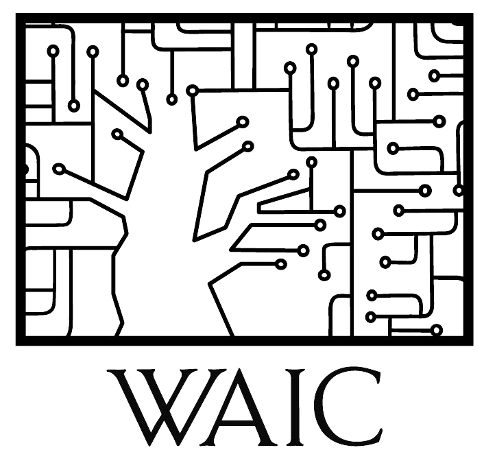

|  | Weizmann Institute of Science20214182 Deep Learning for Computer Vision:Fundamentals and Applications |
|
| Project Title | Student Names | Lecture Link |
| Session 1: DL for Medical Imaging | ||
| Pleural Line Localization in Lung Ultrasound | Oz Frank and Alon Mamistvalov | YouTube Link |
| Brain Tumors Segmentation | Itai Antebi, Ronen Reshef and Dan Segev | YouTube Link |
| Predicting Microbial Alpha Diversity Based on Retinal Imaging | Liron Zahavi, Yochai Edlitz and Noam Bar | YouTube Link |
| Session 2: Other Modalities | ||
| Anomaly Detection in PCB X-ray Images | Gil Boazi and Matan Schlanger | YouTube Link |
| Predicting Behavioral Signals from fMRI | Tamir Scherf and David Ungarish | YouTube Link |
| Nucleus Prediction from Brightfield Video | Joseph Steinberger and Gal Dekel | YouTube Link |
| Session 3: Super Resolution | ||
| Improving Image Super Resolution | Ophir Sarusi and Benjamin Brazowski | YouTube Link |
| A Discrete and Beyond-Convolutional Approach to ZSSR | Dror Bar, Gilad Ben Uziyahu and Asaf Petruschka | YouTube Link |
| ZSSR-U: "Zero-Shot" Super-Resolution in Ultrasound Imaging | Or Bar-Shira and Yair Ben-Sahel | YouTube Link |
| Session 4: | ||
| Spot the Fake | David Sriker, Yonatan Bachar and Michael Lelouch | YouTube Link |
| InstaRepeat | Ron Mosenzon, Ofir Raz and Yaniv Shahar | YouTube Link |
| Meta learning for Scene-Text-Recognition on New Languages | Bar Karov, Shiri Moshe and Yonatan Sverdlov | YouTube Link |
| Session 5: Beyond 2D | ||
| Time-Consistent Underwater Color Enhancement for Videos | Hanan Mordechai, Dana Joffe and Shira Werman | YouTube Link |
| Video Compression Using Implicit Neural Representations | Chaya Barbolin and Itsik Shapira | YouTube Link |
| Feature Visualization and Understanding of 3D Point Clouds Deep Neural Networks | Hodaya Koslowsky, Michal Skoury and Yuval Belfer | YouTube Link |
| Rethinking Sanity Checks for Saliency Methods | Gal Yona | YouTube Link |
| Session 6: ViT | ||
| Image Style Transfer using a ViT Descriptor | Dolev Ofri, Rafail Fridman and Narek Tumanyan | YouTube Link |
| Dust Levels Predictions Using ViT | Dori Nissenbaum | YouTube Link |
| Vision Transformers for Microscopy (MIBI) Data | Omer Bar Tal and Hido Pinto | YouTube Link |
The template of this website is based on CSAIL MIT's Advanced Computer Vision course